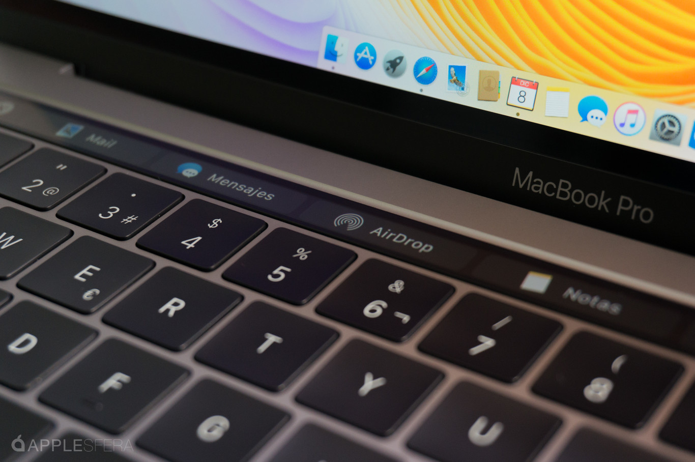

¿Que es la Touch Bar?
La Touch Bar de Apple fue una característica de hardware que se introdujo en ciertos modelos de MacBook, el buque insignia de los portatiles de Apple, a patir del 2016. La Touch Bar era una delgada pantalla táctil ubicada en la parte superior del teclado, justo por encima de las teclas físicas. Era sensible al tacto y podía mostrar controles contextuales y funciones interactivas en función de la aplicación que se estaba utilizando en cada momento.
La idea detrás de la Touch Bar era proporcionar una interfaz de usuario más dinámica y personalizable, permitiendo a los usuarios acceder a atajos y controles específicos de las aplicaciones de una manera más eficiente y rápida. Por ejemplo, en una aplicación de edición de fotos, la Touch Bar podía mostrar herramientas de edición como pinceles y filtros, mientras que en un navegador web, podía mostrar las pestañas abiertas, marcadores o simplemente una funcion para volver hacia atrás sin tener que desplazar el ratón a la parte superior izquierda de las pantallas.

Beneficios
Aunque ha generado opiniones mixtas que mas adelante se expondrán, ofrece algunos beneficios:
- Interfaz Personalizada: Los usuarios pueden personalizar los controles y accesos directos en función de sus aplicaciones y tareas que vayan a realizar. Puedes tener acceso rápido a controles de volumen, brillo, microfono, etc. dependiendo de la aplicación que estés utilizando.
- Funciones de Tocar y Arrastrar: Además de personalizarla, la Touch Bar admite gestos táctiles, lo que permite realizar acciones como desplazamiento y selección con mayor facilidad en algunas aplicaciones. También se usan estos gestos a la hora de ajustar el brillo, el sonido, etc.
- Teclado Expandido: Usando la Touch Bar tenemos una especie de teclado expandido cuando es necesario, lo que es útil para funciones que requieren entrada de texto y caracteres especiales, especialmente en casos de negritas, cursiva o subrayado.
- Seguridad: Aunque no es realmente la Touch Bar, como el botón de escape en algunos dispositivos, los modelos de MacBook Pro cuentan con Touch ID en la parte superior al lado de la barra, que permite el desbloqueo del dispositivo y la autorización de compras de manera rápida y segura.
Problemas
La Touch Bar de Apple generó muchas opiniones opiniones tanto buenas como muy malas y algunos usuarios experimentaron muchos problemas o desafíos en cuanto a la accesibilidad al utilizarla. Aquí hay algunos de ellos:
- Falta de retroalimentación táctil: Esto hacía que algunos usuarios encontraran difícil determinar cuándo habían tocado una tecla en la pantalla. Esto podía llevar a errores de entrada.
- Falta de personalización: Aunque la Touch Bar era en teoría personalizable, las opciones de personalización eran limitadas en comparación con un teclado físico. Algunos usuarios desearon más control sobre qué funciones y accesos directos se podían mostrar.
- No todos los programas aprovechaban la Touch Bar: En muchas situaciones, la Touch Bar simplemente mostraba controles genéricos en lugar de funciones específicas de la aplicación.
- Problemas de duración de la batería: Algunos usuarios informaron que la Touch Bar consumía más energía de la batería, lo que podía afectar la duración de la batería de sus dispositivos MacBook Pro.
- Sensibilidad táctil variable: Algunos usuarios experimentaron que la respuesta a las pulsaciones o toques no era siempre consistente.
Pinchando en la imagen, se accede a un foro en el que resuelven muchas dudas y problemas generados en el uso de la Touch Bar
Además, a Touch Bar reemplazó las teclas de función tradicionales en los modelos de MacBook Pro en los que se incluyó y a ciertos usuarios les generaba incomodidad no tener los botones de funcion a la vista y tuvo que ser Apple quien sacara un articulo y diera explicaciones sobre ello en el siguiente articulo:
Utilizar las teclas de función en el MacBook Pro con la Touch BarRetirada de la Touch Bar con los nuevos modelos de 2021
Apple, conocida por su innovación en tecnología y diseño, sorprendió al mundo tech con un movimiento inesperado en sus MacBook Pro en 2021. La compañía anunció la retirada de la tan criticada Touch Bar en sus modelos más recientes, marcando un regreso a lo tradicional.
Escuchando los comentarios de los usuarios, Apple decidió eliminar la Touch Bar en sus modelos de MacBook Pro lanzados en 2021. En su lugar, la compañía reintrodujo un teclado físico tradicional, lo que fue recibido con entusiasmo por muchos.
Este cambio representa un giro interesante en la estrategia de diseño de Apple y refleja un compromiso de escuchar a sus usuarios y adaptarse a sus necesidades. Con el regreso a un teclado físico completo, los usuarios, pueden disfrutar de las teclas de función tradicionales y una experiencia de escritura más familiar a lo que estaban acostumbrados anteriormente.
Aqui puedes aprender un poco mas de la retirada de la Touch Bar de la web Applesfera"Con el adiós de la Touch Bar se dice adiós no a una característica, sino a la expresión del inmovilismo de Apple con algo que no funcionaba" Antonio Sabán.
Especificaciones
Si bien es cierto que no tiene unas espcificaciones como tal ya que no es un componente como un hardware estándar, tiene una serie de características.
- Pantalla táctil: Era una pantalla táctil OLED (Organic Light Emitting Diode) con una resolución de 2170 x 60 píxeles para el modelo de 13 pulgadas y 3840 x 110 píxeles para el modelo de 15 pulgadas.
- Controles contextuales: Variaban según la aplicación en uso y la configuración de cada usuario
- Retroiluminación: Permitía aumentar la visibilidad en entornos con poca luz.
- Integración con el teclado físico: La Touch Bar estaba ubicada justo encima del teclado físico y reemplazaba las teclas de función tradicionales, que se podían mostar utilizando la tecla de funcion (fn)
Modelos con Touch Bar
MacBook Pro de 13 pulgadas (2016-2020): La versión de 13 pulgadas del MacBook Pro estaba disponible con y sin la Touch Bar.
MacBook Pro de 15 pulgadas (2016-2019): Todos modelos de 15 pulgadas del MacBook Pro incluyeron la Touch Bar.
¿Porqué me llamó la atención la Touch Bar como elemento de interaccion para el trabajo?
La elección de la Touch Bar de Apple para mi trabajo es debido a que fue un producto único y su impacto en la interacción de las personas con la tecnología fue grande. La Touch Bar fue una característica distintiva que reemplaza la tradicional fila de teclas de función en algunos modelos de MacBook, ofreciendo una interfaz táctil que se adapta a las necesidades del usuario según la aplicación que esté utilizando. Tambien es llamativo que esta innovación de diseño como esta, ha levantado un debate constante tanto entre la comunidad de usuarios de Apple como en la industria tecnológica en general, en relación con su utilidad y efectividad en la mejora de la experiencia del usuario.
La Touch Bar representa un cambio significativo en la forma en que interactuamos con los portátiles de Apple, y las opiniones respecto a su introducción ha sido diversa, con algunos usuarios elogiando su capacidad para agilizar tareas comunes y otros cuestionando su relevancia en los flujos de trabajo tanto personales como profesionales. Mi interés en este tema se basa en explorar cómo la tecnología puede influir en nuestras interacciones con los dispositivos, cómo se integra en nuestra vida cotidiana y cómo cambia nuestra percepción de la informática. Además, estudiar la relación entre la Touch Bar y las personas ofrece una oportunidad para reflexionar sobre la evolución de la interacción persona-ordenador y las tendencias futuras.